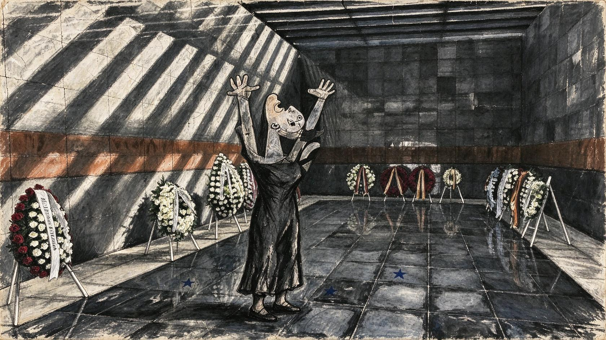
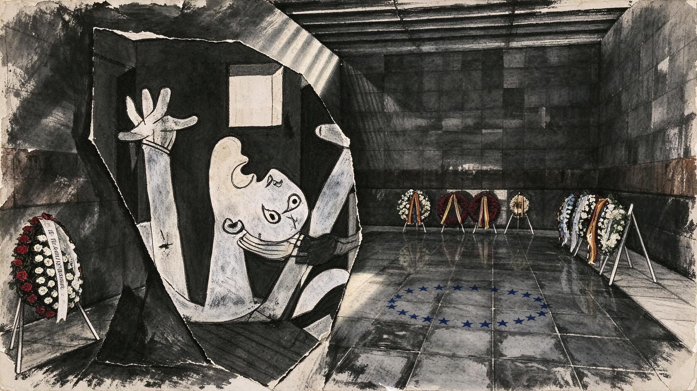
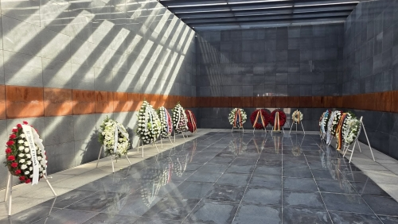

Neuer Prompt

Iteration 007 · Runware API · $0.01926 · 1680 × 944 px




Create one finished wide 16:9 dark editorial memorial painting about Romanian Holocaust remembrance. The scene is a solemn, humane tribute to Jewish and Roma victims; do not recreate violence. Compose a new scene inside the quiet stone memorial hall shown in reference image 1, with wreaths receding along the walls and reflective floor. Main protagonist is the woman from reference image 2, used ONLY as a guide to her anguished expression and raised-arm gesture. Redraw her completely as a fully integrated human-scale figure physically standing in the hall's central aisle, center-left, at the same depth and perspective as the wreaths. Preserve the recognizable raised arms and sorrowful open mouth, but invent her body, clothing, pose details, lighting and surface anew. Her feet meet the tiled floor and cast a soft contact shadow; wreaths and reflected light establish shared perspective around her. Her edges dissolve naturally into the hall's smoke and shadow. Paint the woman, walls, floor and wreaths with one continuous visual treatment: a dark, dirty Guernica-inspired cubist oil mural on aged, cracked plaster, rough charcoal and graphite strokes, dry-brush scumbling, scratched pigment, distressed grain, fractured angular anatomy and compressed space. Deep soot blacks, ash gray and stained ivory; narrow cold light on the witness, worn muted cobalt-blue stars reflected faintly on the floor. Emotional tone: grief, dignity, witness and shared European remembrance. At thumbnail size the woman must read as part of the memorial scene, not as a pasted image. Reference image 2 contributes no background, crop, border, lighting or surface texture. Do not copy its transparent cutout edges. No collage, photomontage, sticker, paper cutout, framed image, pasted figure, halo or hard outline. No bright white marble, clean polished illustration, blood, corpses, weapons, graphic violence, legible text, logos, flags, captions, panels or border.